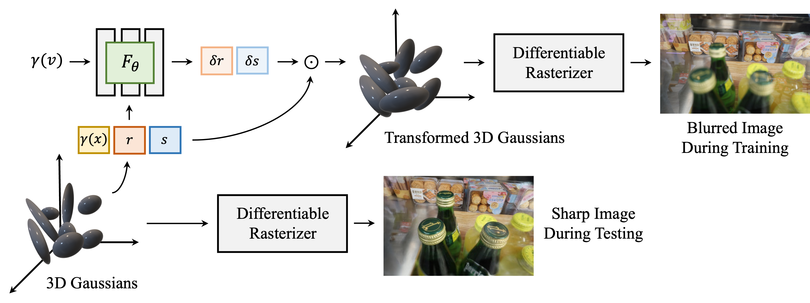
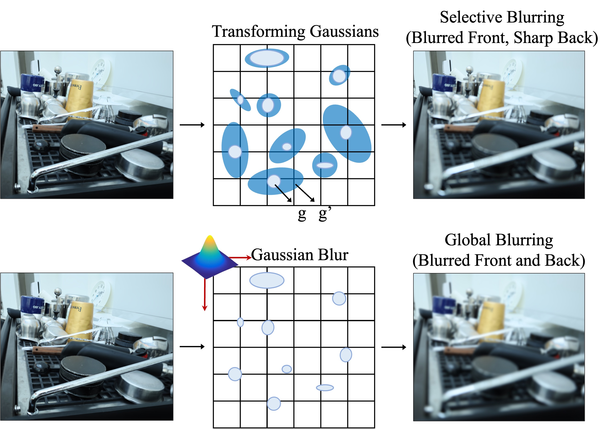

We learn the deblurring by transforming the geometry of the 3D Gaussians. To do so, we have employed an MLP that takes
the position, rotation, scale, and viewing direction of 3D Gaussians as inputs, and outputs offsets for rotation and scale.
Then these offsets are element-wisely multiplied to rotation and scale, respectively, to obtain the transformed geometry of the 3D Gaussians.

Since we predict the offsets for each Gaussian, we can selectively enlarge the covariances of Gaussians where the parts in the training images are blurred. This flexibility enables us to
effectively implement deblurring capability in 3D-GS. On the other hand, a naive approach to blurring the rendered image is simply to apply a Gaussian kernel which is not capable of handling each part of the image differently but blurs
the entire image.